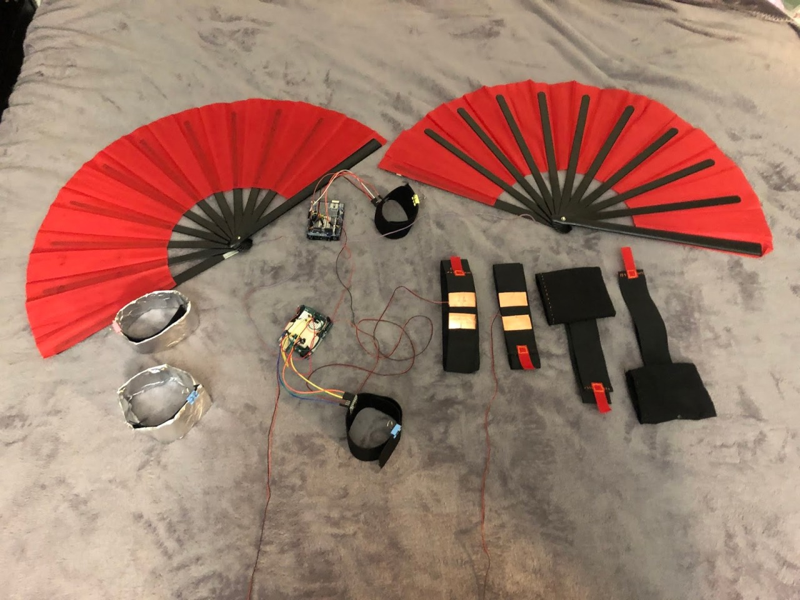

Fan chicken warrior is a endless running game that can be played with Chinese fans and wearables as alternative controllers. The game was installed and play tested at Wonderville (a bar with experimantal arcades displaying) in Brooklyn for 2 days. People there loved it :)
My roles in the group are: physical computing technologist and wearable maker.
The player needs to use their own movements and interactions with fans, to save the life of a chicken: protect it from being eaten in many ways.


We used Arduino, MPU6050, reed sensors, magnets, and soft buttons(made by copper tape and foil) to build the circuit part. And we used feathers, elastic band, velcro, thread, cotton fabric, fans to make the wearable part.
To improve our game experience, we iterated our controllers for another 2 versions.
When we tested our game in Wonderville for two days, a lot of people gave us positive feedbacks. Some of them enjoyed it a lot, and want to play it for multiple times! We are so happy, and thinking about improve it more, and then apply for Alt Ctrl GDC Award in 2020.